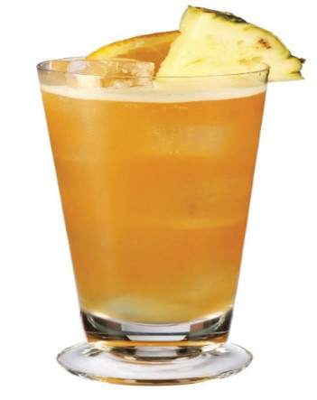

Activity 5.5
Preparation of papaya juice
Prepare papaya juice by following the appropriate methods.
(i) Assess the quality of the juice made.
(ii) Write a report on the performed task.
Mixed fruit juice (Orange pineapple juice)
Ingredients (serve 2 people)
- 4 oranges
- 1 medium ripe pineapple
- 70 g sugar (optional)
- Ice cubes (optional)
- 500 ml water
Method
- 1. Prepare syrup and leave it to cool.
- 2. Wash and cut oranges into halves. Squeeze out their juices and remove the seeds.
- 3. Add pineapple pieces, syrup and water in the blender and then blend them.
- 4. Strain and add orange juice; then mix them properly.
- 5. Pour the juice into a serving glass and then add ice cubes (Optional).
- 6. Serve the juice accordingly.
Figure 5.6 is illustrates orange pineapple juice.

Figure 5.6 Orange pineapple juice101